|
News Update
January 15th, 2012
The long awaited e-Grips update - It has been over a year we know... but we've been busy all the while! In the past year since we have updated, so much has happened it's hard to sum it all up. e-Grips were all over comp walls in 2011 from ABS Nationals in Boulder to the Nor'easter in Burlington, Vermont and in Central Park for the EMS Pro in between. The most recent event we sponsored was the first Lead World Cup in over 20 years, which our e-Grips Sales Captain Chris Danielson was the Chief US Routesetter for. Check out the video! We apologize for not updating all of the new sets, but, for those that have been part of the family, getting new shapes each month, e-Grips First Dibs program has been as popular as ever. For those of you interested in First Dibs, you can always contact Chris Danielson at cdanielson@gthi.com for any info about the most recent sets or any e-Grips questions in general. We will be updating the individual website pages over the coming weeks with all of the new sets shown below. Here are pictures of all of the First Dibs from 2011 and the last months of 2010, all now available as a part of the complete e-Grips line: We have had a bunch of other new sets too of course! The Bubble Wrap Beehive and Jibber Jabber Super Jugs were released just in advance of ABS Nationals last season. The Beehive speaks for itself and has already been featured in dozens of competitions. The Jibber Jabber Super Jugs is a set of 5 deeply incut single-hand jugs, perfect for easy climbing on steep walls. All the shapes in this set were modeled after the near-perfect single shape from the original Jibber Jabbers - those of you that have the set know which one we're talking about!
A new theme we also added last year, is a Training style of shapes - purely symmetrical shapes for left or right hands - function oriented - great for the System Board or home training wall, but also great to force movements, as was shown in the Lead World Cup in Boulder, where the Men's Final had the top climbers in the world spinning around on bright orange Pure Power Pockets II. We may expand on this line in the future, but for now we have four sets - Pure Power Edges I and II, and Pure Power Pockets I and II. Enjoy!
|
||||||||||||
|
News Update
October 24th, 2010
New e-Grips sets unveiled at Nor'easter Competition, additions from First Dibs, and more for Fall 2010! Last month on a brilliant autumn afternoon, the top boulderers in the US battled at the Nor'easter, and these climbers were some of the first to climb on new e-Grips shapes! The Myorcan TufaPinch and Myorcan Slopers, featured in Men’s Final #2 in the UBC finale competition, have just recently been added to our full line, along with eight other amazing sets. Check out the highlight reel from the competition (around minute 5:30) to see the grips in action: Along with the Myorcan themed shapes added in 2010, this summer and fall we have also added to the Limestone family a new set of sloper-pinch grabs called Lunar Loaves. In the Artistic family, there are four new sets with unique styles. The Butterdish Buckets, with a curved line aesthetic reminiscent of the Salad and Soup Dishes, is just out for October. Another three sets that have been featured in our First Dibs subscription plan have recently been added to the Artistic line: The Turtle Mini-Jugs offer unique sloping jug grabs with subtle finger catches. The Side Dishes II, featured at the 2010 Vail World Cup and Mechanical Pinches, highlighted in ABS Nationals last winter, are incredible new shapes as well. And if you're looking for grips to train for your next project in Hueco or Joe's Valley, we've got more for you... To the Granite line, we've added the Real Hueco Incuts, a simple set of five crimps and pinches with the refined real rock carving style. And to our Sandstone family, we've got two sets added - the Joe's Little Ones, a big set of twenty great for crimps or monster footholds, and a classic set refurbished nearly ten years later, the Joe's Classic Jugs. (For the hold-fanatics among you, Joe's Classic Jugs include the infamous two-finger "Dream Pocket"...)
| ||||||||||||
|
News Update
May 14th, 2010
e-Grips Sponsors Big Up
Productions Video "The Insiders," just released online! This past March, e-Grips sponsored
an awesome video project produced by the great crew at Big Up Productions.
The video, just released online, depicts the life and world of indoor
climbing and we were excited to be a part of it. e-Grips own Routesetter
Extraordinaire Chris Danielson traveled out to Central Rock Gym in Worcester,
Massachusetts, to set all the routes for an excellent group of climbers. Check out the video here: http://www.youtube.com/user/ National Champion Sasha Digiulian
climbs on an e-Grips themed red route featuring a number of our favorite
sets such as the Jibber
Jabber Jugs, Original Tribal, Joe's
Classic Jugs, Comfy Crimps, Myorcan
Tufas and the new O'Myorcan Ripple. Young phenom Ashima Shiraishi
boulders up the Geometrics like they're jugs (they're not)
and makes her way through the Font
Slopes and Drop Art Finger
Buckets on a steep
wall like they are no trouble at all. Squeeze-master Vasya Vorotnikov
eats up the Demi-Loaves, and king of the crimps Paul Robinson
fights through the amazing Ian's
Tribal and then
finds the perfect simulation pinch, from the Galactic Crimps, to train for the crux move on his
hardest send to date, Lucid Dreaming. Check them out!
| ||||||||||||
|
News Update
May 3rd, 2010
OVER A DOZEN NEW SETS NOW AVAILABLE! CWA SUMMIT AND WORLD CUP AROUND THE CORNER! Whoa' it's been way too long, hasn't it? We've been so busy pushing out new shapes for amazing competitions, new climbing facilities, and our loyal friends at commercial and home gyms around the world, we've hardly had time to breathe! There are a ton of new shapes now available in the full line � read below or check out the NEW tab for more info. New e-Grips Shapes We have new sets in every single e-Grips category This spring, we've got tenacity and technique in mind, so all of these sets lend themselves towards getting stronger from slab to slightly overhanging walls - if you can hang onto these grips on anything steeper than that you seriously deserve a medal. If you want features, check out the AMAZING new O'Myorcan Ripple or the Shake and Bake Slopers. How about holds for the tricky routesetter inside us all? Check out the Remarkable Rocks Scoops subtle sloping dishes with tiny little divots for the tips, Pure Slap Slopers � pancake style grabs excellent for dihedrals, ar�tes, and slabs. If you�re looking for a little bit more positive holds, consider these two new sets of ten, the Caterpillar Instars or the BoCan Crimps, and also take a look, straight from the future, at the Galactic Pinches. Always eager to please with the most unique technical foothold sets on the market, we also have another great set that also double as AWESOME crimps on vertical or slab terrain � the Peabody Feet. And for the kids, a little funky style for little fingers � the Jr. Bugguy.
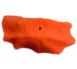
Climbing Wall Summit and IFSC World Cup in Vail, Colorado Coming up in mid-May 2010, the 4th Annual Climbing Wall Association Climbing Wall Summit is back again in our hometown of Boulder, Colorado � this year with e-Grips own Pro Routesetter and Rep Chris Danielson as Keynote Speaker! Chris has been all over North America routesetting, repping, climbing, and consulting for gyms over the past 5 years and will be kicking off the Summit with a talk about how the diverse world of climbers has evolved in indoor gyms over the past two decades. Check out www.climbingwallindustry.org for more info! Look out for many of e-Grips new shapes at the 3rd annual IFSC World Cup and Citizens Comp at the Teva Mountain Games. Coming up the first weekend of June in Vail, Colorado, this event is one-of-a-kind, with the best climbers in the world throwing it down in an incredible outdoor atmosphere and thousands of spectators and participants in all the other fun events of the TMG. Come out to Vail for a great start to Summer! | ||||||||||||
|
News Update
Novermber 1st, 2009
NEW SETS! NEW SETS! NEW SETS!!! AND 10% OFF ALL E-GRIPS WEB PURCHASES! 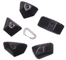 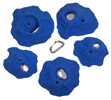 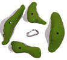 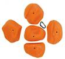 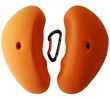 And that�s not all! Also new to the e-Grips line is an amazing new theme of shapes called Remarkable Rocks. Inspired by a real destination called Kangaroo Island, with incredibly cool rock formations, Ryan Spence brought this theme to life with a set of amazing Roof Jugs, Jugs, and Scoops. The Scoops were a recent exclusive monthly set and will be available soon, OR you can get it now at the discounted price by signing up for e-Grips FIRST DIBS!
- The e-Grips Team | ||||||||||||
|
News Update
August 21, 2009
New Profiled Setters! Justen, Sjong, Jeremy Hardin, Peter Kamitses, and Brent Quesenberry - Some of the best setters in the country, working at some of the newest, biggest, and growing climbing gyms! Check out their interviews for some great routesetting lore and tips and tricks!
Keep checking back - over a dozen new e-Grips sets, including exciting new e-Grips Competition Routesetter "Signature Sets," to be posted soon! - The e-Grips Team | ||||||||||||
|
News Update
April 23rd, 2009
Whoa� it's been a while. Despite our lack of updates on the website, we�ve been busy as ever at e-Grips, churning out sweet new shapes, sponsoring competitions left and right, and getting ready for some big events.
Routesetting and Competitions: On the routesetting front, our team sponsored setters have been killing it at the comps. ABS Nationals was an amazing even this past February - Chris Danielson, Kynan Waggoner, and Jamie Emerson all putting up some excellent routes on the wall. e-Grips Men�s Final 4 was a standout, with a "rose dyno" to a Jibber Jabber Jug, then a "double clutch" to two Bubble Wrap Pinch Wedges. Coming up in late April and early May, the "Professor", Chris Danielson will be instructing routesetting clinics and workshops in Colorado and Texas, and then, along with "Punk Rock" Jamie Emerson, and "Urban Cowboy" Kynan Waggoner, the team will come together again to set the Bouldering World Cup at the Teva Games. Come out to see the strongest boulderers in the world crush it in Vail! Thanks to Matt Hulet and the Professor for the pics. See you out climbing! - The e-Grips Team | ||||||||||||
|
Fall Madness!
Nov 1st, 2008
Shapes - Of course, new shapes are always coming in. Formerly released to the exclusive First Dibs family but now available to the public - the Font Slopes are perhaps the best Fontainbleau-inspired shapes out there: big, slapping slopers, but intricate and technical, in classic e-Grips fashion. The Baby Bubble Wraps are an awesome set of 20 small technical shapes with two different bubble types - superb for sloping ar�tes, or balance work on slabs or vert. The Dimple Dot Jugs fill out the Pure Line for the year, with 5 simple, super-friendly rounded jug grabs. And entirely new to all, the INCREDIBLE Jibber Jabber Jugs are a set of 3 roof jugs with the eG aesthetic � 2 rings and the most amazing single handed incut jug you�ve climbed on. Check out all the new shapes here! Routesetting and Competition Season- We�re proud to be involved with the American Bouldering Series again for another year of sponsorship of their great events. The comps kicked off in September and the season is blasting along. eG�s Team Setter Chris Danielson just got back from instructing a couple big routesetting clinics up at a new gym called Climber�s Rock in Canada and will be headed out to the third leg of the Triple Crown Bouldering Series in a couple weeks. e-Grips is also making brand new sets specifically for the ABS Regionals which kick off all over the country in January where you�ll likely see many e-Grips Profiled Setters turning wrenches! Not long after those events, Chris will be setting the SCS Adult Nationals at the Winter Outdoor Retailer show in Salt Lake City with Profiled Setters Kevin Branford and Molly Beard. And less a month later, eG Pro Team Setters Kynan Waggoner and Jamie Emerson team up, along with Chris, with PCA mastermind Scott Mechler and prolific New England setter Kyle McCabe - to set the standard at ABS Nationals! It�s going to be a busy 2009! | ||||||||||||
|
Vail World Cup is a Wrap
June 6th, 2008
"Vail World Cup is a Wrap - e-Grips setters made it happen! - Chris Danielson gives the recap!" I�ve been routesetting for well over a decade, and working in recent years in competition climbing at major events with top North American climbers.� Being able to
set routes to challenge the likes of Sharma, Woods, Robinson, Puccio, Payne, Rands… and countless others, is amazing fun, and I�ve had
the opportunity to test their skills on competition walls and when training for a few years now.� But myself and other experienced setters
have always wondered - how do the Americans stack up?� How would we run against the Europeans - all of those seasoned World Cup climbers,
with coaches, training regimes, V14 and 5.14 ascents, and the strength from experience, of competition confidence? This past weekend in Vail, Colorado - the Teva Mountain Games hosted the first ever Bouldering World Cup on US soil - and we all found out.� American climbers
proved we can hold our own in international competition… and then some.� And American setters took a step forward in the competition
arena as well - the entire World Cup setting team being made up of e-Grips setters of course… Americans fared amazingly well, with Alex Johnson WINNING the first World Cup she�s ever competed in, defeating Austrian powerhouse Anna Stohr and a field of countless
other strong international women, as well as top Americans Alex Puccio, Lisa Rands, and young Tiffany Hensley (Hensley just missed the podium
by one spot, finishing fourth).� One half of the female finalists were American and four out of the top ten women were from the US! Killian Fischhuber of Austria continued his reign in World Cup standings among the men, finishing first among an incredibly dense field.� The boulder problems divided
the field, but tightly, mostly with placements based on the number of attempts each climber made.� Italian Gabiel Moroni placed second,
finishing both the problems Fischhuber had, but taking one more attempt in his boulders than the Austrian had. With a World Cup scoring system based on either reaching the "top" or the "zone", and placements split by the number of attempts needed to reach those markers, Paul
Robinson, Frenchman Gerome Pouvreau, and Daniel Woods essentially tied in the third and final round - but their final rankings were split
by the number of attempts each had made - and the same assessments from previous rounds.� There was much debate among competitors and spectators
alike about the scoring format, which left some climbers who had reached higher holds on a particular boulder, with no advantage, if many others
had also reached the "zone", and perhaps with less attempts. Chief American setter for the event, e-Grips team member Kynan Waggoner, worked closely with other top American setters also on the e-Grips team - Jamie Emerson and
Mike Moelter - as well as International Chief Setter and all-around nice guy Kim Donghyun, who had a wealth of World Cup and high-profile
setting experience behind him prior to Teva.� I headed up to Vail late in the week to help the World Cup team forerun the boulders, catching
up with The Spot�s Johnny Hork and the Southwestern "Compressor" Jon Cardwell, who themselves had been climbing relentlessly to help
the team get the problems dialed.� As is commonplace at Teva, the team found themselves up late nights, battling pouring rain, water dripping
through t-nut holes in the wall, temperature swings of 40 + degrees, and blistering winds.� But with the e-Grips crew behind it - they got it done! In the end, the consensus was that the boulders were crushingly difficult - but the problems themselves were well-set, after three rounds, the competitors were fairly divided
and had put on a great show, entertaining a crowd likely approaching, maybe even exceeding, 3,000 people. An overwhelming sigh of relief was in order after the event, since the luck of the weather played a great role in its overall success.� The rain put the pressure on
the routesetters, and soaked a field of youth competitors for the Youth Competition, but the World Cup and Citizens Competitions went off with only minor delays.� This event proved that American competitors
and routesetters alike can step up seriously on the global stage, and we�re psyched to see more in the future - from the e-Grips crew and the US Team alike! Check out some pics and visit Jemerson�s site b3bouldering.comand our friends at momentumvm.com as well for some recap on the World
Cup. ***Also be sure to check out the NEW page for pics and info on all our
new eG sets, and our Featured Setters page for profiles on early 2008�s
round of profile setters - Diane Russell from one of the best older gyms in the US - Pacific Edge; Joe Czerwinski of AZ on the Rocks and
the Asian X; Kyle McCabe - the young buck from New England tearing it up; and Kevin Branford, veteran of USA Climbing and globe-trekking cruise ship routesetter.� � And - if you�re psyched on
setting - a new Hangar 18 gym in Riverside, CA will be hosting a USAC Level 1 Routesetting Clinic I�m instructing July 19th and 20th!
Shoot me an email for details or to confirm a spot -
it�s gonna fill up fast!� -Danielson | ||||||||||||
|
New Sets Unveiled!
May 25th, 2008
New Sets Unveiled! e-Grips routesetters ripping it up all over international events! Springtime has had a lot of eG action! This past week, we just introduced 9 NEW sets into the full line. The fresh new Peabody Granite line has the Flakes, the Pinches, and the big-time Peabody Crimp Plate. Ryan Spence�s turtle theme continues with some amazing new variations - the technical crimp and pinch sets C-Turtles and Tortoises. Add to that a sampling from each of the Pure, Limestone, and Artistic lines (Geopinches, Lunar Rounders, Bubble Wrap Ledges II, and Virus Mini-Jugs) and you�ve got the eG line well over 800 unique shapes. e-Grips setters are taking strides to play our own American style of routesetting the world over. Chris Danielson just got back from co-setting the Canadian Bouldering Nationals in Edmonton, Alberta - turning some wild problems for all the top Canucks. Another pro setter on our team - Kynan Waggoner, had his first hand at a World Cup in Austria, and will be Chief US Setter for the first American Bouldering World Cup in Vail at the Teva Mountain Games, less than two weeks away. This first WC is an entirely eG affair, when it comes to the routesetting - also on that official team will be eG setters Mike Moelter and Jamie Emerson, and Chris will be there for eG as a forerunner and to prep competitor Iso with some fashionably fresh grips. Be on the lookout in Vail for our team with the full Trango crew supporting at our booth as well, and only weeks later, Chris will be out in California at the USAC Youth Nationals at one of our favorite gyms - Planet Granite!
| ||||||||||||
|
e-Grips in full force at CWA Summit!
May 7th, 2008
e-Grips in full force at hugely successful Routesetting Clinic and CWA Summit! This past week was packed full with exciting climbing events in Boulder, Colorado. In the very last days of April, our e-Grips Routesetting Professor Chris Danielson instructed the first USA Climbing Level II Routesetting Clinic of its kind at the world-renowned Boulder Rock Club, and with fellow routesetter Mike Helt from www.routesetter.com also instructing. e-Grips was a big sponsor of the event, getting some brand new exclusive holds into the hands of talented setters from all over the US. Here's a shout out to the guys from some of the best gyms around - Adrenaline Climbing, Boulder Rock Club, Climb Time Towers, Peak Experiences, Rocks and Ropes, Stone Moves, and The Climbing Place! Following the USAC Clinic, Chris put on a half-day Routesetting Workshop for the second annual Climbing Wall Association Summit, which the GTHI family of brands was a proud sponsor of. Well over 200 climbing wall owners, managers, routesetters, and other professionals were in attendance for the Summit, and GTHI partnered up with the Spot Bouldering Gym to host a night of climbing and good times. Climbers got a little crazy with trampoline jumps to the Spot boulders, enjoyed slackline demos, a huge raffle, and Trango's own Malcolm Daly presenting a great slide show for the masses. Look out for e-Grips in one month�s time at the first ever Bouldering World Cup held on US soil at the Teva Mountain Games in Vail, Colorado. For a moment, we will forsake humility and ask you to consider the GREAT PROWESS of e-Grips - 3 out of 5 of e-Grips professional setters will be there to set the event! AND… Check out the 9 NEW sets just added to the website, as well as four new e-Grips profiled setters soon to come! | ||||||||||||
|
ABS Nationals goes off HUGE!
Feb. 19th, 2008
e-Grips Finals problems create incredible movement for top pro climbers. This past weekend in e-Grips home of Boulder, Colorado, the ABS Adult, Youth, and Citizens Nationals were a great success. Held at the Spot Bouldering Gym and CATS, the infamous training center for strong climbers, the competitions collectively hosted over 500 competitors and thousands of spectators in total, over three days. e-Grips represented in full force, with the newest eG Team Setter Kynan Waggoner head setting perhaps the best event he�s ever been a part of. Jamie Emerson, fresh off of a road trip all over the east and south, and on his way to Switzerland for two months (check out his blog www.b3bouldering.com), created some exceptional toe-hook madness movement on e-Grips Men�s Final 4. Local Paul Robinson beat out the legend, Chris Sharma, to win the men�s event, with Alex Puccio slightly edging Alex Johnson for top spot among the women. eG Head Setter Chris Danielson ran the Citizens� National at CATS with owner Rob Candelaria, setting some crushingly difficult problems that will challenge climbers for years to come on CATS newly refurbished walls. And all of the other team setters playing a role as well - Mike Moelter spent much of the weekend on the mic, exciting the screaming crowd and energizing climbers to pull down hard, and veteran eG Team Setter Lance Hadfield rounded out the crew by WINNING the Master�s category at the Citizens� National! The e-Grips problems featured some of the coolest eG shapes, including the old school Papa Turtle Shell, the Myorcan Tufas and newer sets like the 2Tex Pure Crimps, the Bubble Wrap Ledges, Armordillo, and recent amazing First Dibs sets (soon to be available to the public) including the Demi-Loaves, Peabody Flakes, and C-Turtles. e-Grips continues to set the standard! Look out soon for new eG Profiled Setter interviews from veteran competitor and setter Diane Russell, and experienced comp setter and coach Joe Czerwinski, who just had an excellent performance at ABS Nationals! | ||||||||||||
|
Final 2007 additions to the eG line!
December 23rd, 2007
Beginning in 2008, e-Grips finalizes the complete addition of 16 new sets, formerly only available as exclusive First Dibs or ABS sponsorship shapes, to the complete e-Grips line of climbing holds. Check out the new shapes here! New Features include the moon scoop rounded -Lunar Crimp Plate, the totally unique slope grab coined the -Armordillo, and the artistic gas mask character you�ve seen from eG marketing campaigns of old called the -QED. Among the new Pure line additions, we�ve heard the -2Tex Pure Crimps called the best competition crimps on the market. The -2Tex Stealth Edges are sleek and devious. And the -Pure Line Finger Buckets, shaped after high demand from the setting community, are superbly functionally simple. Existing themes in the Artistic line have been filled out with the -Tribal Mini-Jugs, -Drop Art Mini-Jugs, -Bubble Wrap Obliques, and Bubble Wrap Ledges I. The ABS 9 sponsorship set of edge/pinches called -Lunar Flats adds to the moon scoop theme, with more to come in 2008. Added to the Sandstone line is a smartly designed and fresh theme called -Caterpillar Edges, and to our Granite line - a monster set of striated chunks called -Super Blocks. Finally, we�ve added a new true-to-form Granite theme called Real Hueco that has gradually been filling out for about a year, with the amazing set from ABS 8, the -Real Hueco Pinch Jugs, the super technical low-profile -Real Hueco Slot Plates,� and a diverse set called -Real Hueco Moderates. If you�re eager to get these new grips on your home wall, call us or check back soon for our updated shopping cart for online purchases. If you�re representing a climbing gym, contact our National Climbing Wall Rep Chris Danielson to ask about our gym pricing and discounts. And be sure to check out the best way to get fresh holds every month at a huge discount, with our standard-setting First Dibs program! | ||||||||||||
|
Monster Routesetting Clinic
December 11th, 2007
Monster Routesetting Clinic in North Carolina.. eG Profiled Setters announced - more on the way! There was a recent firestorm of routesetting at a new gym in the South called Triangle Rock Club. eG Setter Chris Danielson turned a long December weekend into a hugely successful USA Climbing Level 1 Routesetting Clinic, instructing wrench-turning and climbing movement to over 30 routesetters young and old from 10 different states across the country. eG was proud to put up the first sponsorship banner in what will become a major gym in the region. We�re also proud to announce our first round of eG Profiled Setters from all over the states: Master gym setter Kyle Musgrove from Tennessee, Constantly traveling wrench twister Jackie Hueftle from Colorado, prolific shaper Louie Anderson from California and comp setting queen Molly Beard up in Oregon. Look out soon for the updated e-Grips Team page with interviews from each of these talented setters, who we hooked up with eG exclusive holds and new threads. Happy Holidays! | ||||||||||||
|
e-Grips News Update Fall 07'
October 27th 2007
This fall has been so crazy that we didn�t even have time to update info on all the sick developments at e-Grips! Here�s a short recap of highlights: Routesetting - We�re proud to announce that USA Climbing Routesetter and Operations Assistant Kynan Waggoner has joined the e-Grips Professional Setting Team! Kynan has been setting for almost a decade, and recent conquests include gigs as Head Setter for ABS Youth Nationals and organizer for the Teva Games. Kynan, and e-Grips Team veteran Mike Moelter spent some time in Ecuador in August, where they participated in an IFSC (International Federation of Sport Climbing) Routesetting Clinic and set for the wild Youth World Championships, where US kids flooded the global stage and performed extremely well. eG is energetic about our support for routesetters around the country. In that vein, we�ll soon be starting a �Profiled Routesetter� web page and each month will be selecting a setter from around the US who stands out. We�re looking for motivated talent and experience � guys and girls that get it done, whether in commercial gyms or comps, and who are always trying to come up with new movement. If you�re doing something especiale in the routesetting world, give a shout to eG Head Setter Chris Danielson. If you�re profiled, eG will hook you up with a fresh new eG jacket, a tee shirt, a free set of exclusive holds, and a one-time discount on e-Grips holds for your gym! Apparel - What?! New schwag?! YES! eG has new limited edition t-shirts and jackets in honor of the hugely popular "Buddha" feature hold. We decided this artistry was too cool for just urethane, so we did some screen-printing for the masses with supra dupra new Marc Russo designs. The �enlightened� and eG �tribal� designs will be available soon on the website, in Men�s and Women�s flavor - but if you want to be ahead of the curve - Contact Us and we�ll get you set up with gear before it runs out! Comps - Along with supplying some grips for the Youth Worlds, eG stepped up to sponsor the Mammut-EMS Bouldering Championships at the SLC trade show back in August. eG Head Setter Chris Danielson helped set the event, getting some incredible new dual tex crimps and a monster slope called the Armordillo on the sick walls of The Front Climbing Club in SLC. Look out for e-Grips at events big and small all over the US this comp season, with new sets at every American Bouldering Series event. Chris will be out and about this fall at the HP 40 and LRC Triple Crown Events, and instructing Routesetting Clinics on the east coast! Shapes - Of course, new shapes are always coming in. Along with the Armordillo feature, there�s the Finish Plate feature, and some very cool jug and edge lines. Oh, and half a dozen hold sets that were shaped last year for the First Dibs program are now available in the full line, along with the sick ABS 8 Set. Check out the new shapes here! | ||||||||||||
|
2007 SCS Youth Nationals
July 18th 2007
e-Grips Team Setter Mike Moelter recently returned from setting one of the biggest events of his routesetting career. Read his coverage of the amazingly successful 2007 SCS Junior Nationals: "1st PCA, 1st Petzl Rock Comp, 2007 SCS Jr. Nationals. This list, in no particular order, is of the top three best large comps I have set for. A few years ago I would have never imagined that a Jr. event would be in my top three, and this was a rope event at that. The main goal at Jr. Nationals is to create and try to prepare Team USA for Jr. Worlds. This year�s event was held at Planet Rock, Ann Arbor Michigan. It is no easy task to have 415 Jr. competitors show up for a comp and tell them we can only take 50 to compete at Worlds. At the same time, as a setter, you want to throw things at climbers that they will encounter on the international scene. Volumes, tufas, stalactites, & tons of natural features are the norm and have now been incorporated into USA Climbing�s National events. If Team USA has ever been prepared for anything the international scene could throw at them, this was the year. The setters had 7 large fiberglass volumes, 2 stalactites, one of which was 15 ft. long and any number of wood volumes that could be made on the spot. It was truly the first time setting in the states that I felt we had evolved and entered a new arena. It also made us as a setting crew really nervous as to how the climbers would react. Of course with this many wall features there were some climbers that just could not either get the right psych or beta to handle the features. I know for a fact when you come out for route preview and the setters have put some sort of giant blob on a wall that you have never scene before it can be intimidating. Keep in mind this is a one try only event. You do not get 5 minutes to fall as many times as you can and still give it that one more effort to figure out the beta, it�s the HAMMER, either clip the chains or take the whip. Overall though my hat goes off to all the National competitors and their performances, they truly prevailed and realize that if we want to rule the podium at Jr. Worlds this is what Nationals needs to climb like. From coaches to parents, staff to volunteers, USA Climbing and the competitors, the amount of time and resources spent on everyone�s part is tremendous and then there is the host gym. Planet Rock owned and (very much so) operated by Nick Cocciolone was an amazing host gym for this years Jr. National. I have never had a gym owner build me things to help aid in the course setting - whether it was a ramp so ladders could sit level or an outdoor speed wall he can and was willing to do it all. Props to Nick and his entire crew at P-Rock. Team USA will be headed down to Ibarra, Ecuador for this years Jr. Worlds. Kynan Waggoner and I will be headed down also for an international setters clinic. We hope to become internationally certified so we can open the doors to any US setter aspiring to set for international events. We will keep you posted on how it goes." | ||||||||||||
|
The 2007 ASCI Showdown
July 11th 2007
The ASCI Showdown in Western, MD wrapped up last weekend. Part climber summer camp, part high level bouldering comp - by all accounts, the event was a huge success. Organized by the boys behind NE2C (www.boulderingcomps.com), the comp took place at the new Adventure Sports Center International (www.adventuresportscenter.com) in McHenry, MD at a super cool venue with a custom built comp wall and amazing whitewater center, which more than a few of the pro climbers got bashed around by.e-Grips was there as a hold sponsor and Team Setter Chris Danielson went out to represent and see what the show was all about. Though the whole East coast team acknowledged that things looked ominous the day before, the weather was perfect on Saturday for the event. The action was fierce between the best competitors in the US, and one stylish monster climber from Canada, Sean McColl. In the end McColl took first, flashing all four problems, though the amazing Daniel Woods was only a foot slip behind. For the women, it was Lizzy Asher flashing, followed up by Angie Payne, who after a strong effort, also sent all four problems. Check out some e-Grips exclusive shots from the comp! Thanks to Angie Payne for the camera! Click on the images and or news title to see the full images and other pictures of the 2007 ASCI Showdown. | ||||||||||||
|
E-Grips Setting Team Update
June 19th 2007
e-Grips Team Setter Chris Danielson just wrapped up a whirlwind tour of New England, finishing up two routesetting workshops and a tour of regional climbing gyms. Chris worked with 5 setters at each of Metrorock�s two facilities - the flagship monster gym in Boston proper, and Metro North, their sick new wall with awesome bouldering and steep lead climbing in Newburyport, Mass. If you�re up in the Boston area, check out some of Chris's new e-Grips routes up in both Metrorock gyms, and at the nearby Boston Rock Gym, an old school staple with a fun new bouldering area and great lead training walls - all three of these gyms are part of our e-Grips First Dibs Family so you�ll always see the freshest holds on the walls and great routes!In other news... as always, e-Grips is leading the charge in competition climbing. We�re a proud sponsor of the upcoming ASCI Showdown coming up on June 30 in Western, Maryland, which is pulling in all the big talent. And the weekend after that, you�ll see e-Grips as a proud sponsor of the biggest competition of the year, USA Climbing�s Youth Nationals at Planet Rock up in Michigan. eG Team Setters Mike Moelter and Lance Hadfield are both part of the lead routesetting crew for the Youth Nationals... check out www.adventuresportscenter.com and www.usaclimbing.org for more info on these huge comps. | ||||||||||||
|
Pictures from the 2007 Teva Games
June 8th 2007
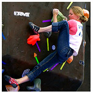Our very own Jamie Wood who worked the e-Grips/ Trango booth at the event was kind enough to let us use her photos of the Volkswagen Pro Bouldering Finals. Check out the awesome pictures of Angie Payne and Daniel Woods. Thanks Jamie!Click on the images or news title to see the full images and other pictures of the Teva Games as well. | ||||||||||||
|
2007 Teva Games - Climbing Results
June 4th 2007
Looks like the Volkswagen Pro Bouldering Mens and Womens Finals results are in. Once again Boulder's own Daniel Woods snags 1st in the mens followed by Paul Robinson in 2nd and Robby D'Anastasio in 3rd. While in the womens event Alex Puccio gets 1st place followed by Paige Claassen in 2nd and Boulder's Angie Payne in 3rd. The full official results for the Volkswagen Pro Bouldering Mens and Womens Finals can be found here. All of our e-Grips Professional Setters would like to the Teva Game's competitors and spectators for coming out and participating. The e-Grips crew has lots of fun setting for this event and looks forward to it every year. |


 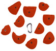
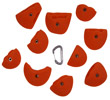
 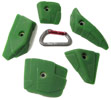
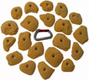
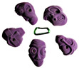
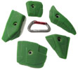
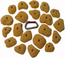
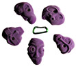


 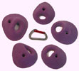
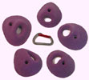